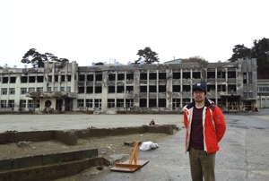

東日本大震災のフォローアップ活動

東日本大震災の教訓を国際社会に発信・共有すべく、被災者の方々の体験や被災地の復興課題、そして支援者の視点などについてレポートしています。特に宮城県石巻市を中心に定期的に被災地を訪問しています。また、日本においてさまざまなパートナーと実施している東日本大震災に関連した活動の成果もこちらでお伝えしてゆきます。
石巻での取材
- Japan: Disaster, disability and a community's revival（英語、2014）
- 震災と障がい、そしてコミュニティの再生（日本語－上記記事の拡大版、2014）
- Aid Worker Diary: Japan's Tsunami（英語、2013）
- エイドワーカー・ダイアリー：東日本大震災から2年（日本語、2013）
- フォトギャラリー （英語、2013）
- Aid Worker Diaries: "I was struck by the strength and resilience of the people in Ishinomaki" （英語、2012）
- エイドワーカー・ダイアリー：石巻の人々の強さと忍耐強さに感銘 （日本語、2012）
- Japan: Post-earthquake coordination saves lives （英語、2012）
- 「コーディネーションでいのちを救う」in 石巻 （日本語－上記記事の拡大版、2012）
- フォトギャラリー（英語、2012）
OCHA関連レポート
- Fukushima: Five years on （英語、OCHA、2016）
- フクシマ：原子力災害から５年（日本語、2016）
- Kizuna (Bonding) in Fukushima （英語、OCHA、2015）
- 福島で見つけた絆 （日本語、2015）
- Green Star Awards: Environmental emergency "heroes" honoured －東京電力福島第一原発事故後に独自の判断で住民を安全避難に導いた福島県葛尾村の松本允秀村長が受賞（英語、OCHA, 2013）
- 人道支援のためのイノベーション：OCHA助成金受賞者発表（日本語、2013）
- 「地震、津波、そして壁新聞」（日本語、OCHA, 2013）
- Linking Humanitarian and Nuclear Response Systems（英語、OCHA, 2013）
- Disasters: Learning from Japan's tsunami（英語, IRIN, 2012）
- Japan: Recovery operation for missing persons in tsunami aftermath（英語, IRIN, 2012）
関連リンク
- 「東日本大震災と国際人道支援研究会」提言書
- 世界銀行「大規模災害から学ぶ」
- 世界防災閣僚会議in東北・議長総括
- 人と防災未来センター「減災社会への連携」
- 内閣府・中央防災会議
- 外務省・IOM「東日本大震災と外国人政策」
- 大災害に立ち向かう世界と日本－災害と国際協力 (明石康・大島賢三監修 柳沢香枝編 2013)
- こんな支援が欲しかった！現場に学ぶ、女性と多様なニーズに配慮した災害支援事例集(東日本大震災女性支援ネットワーク)
- Connecting the Last Mile - Role of Communications in the Great East Japan Earthquake (Internews)
- 世界の高齢者支援の向上と発展～世界の災害に備えて～（日本赤十字社）
- Displacement and older people: The case of the Great East Japan Earthquake and Tsunami of 2011 (HelpAge International)
- Partnership Innovation Learned from the Great East Japan Earthquake and Tsunami 2011 (Mizan Bustanul Fuady Bisri - OCHA 2013 Humanitarian Research and Innovation Grant Program)